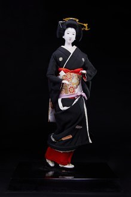

Hatsumode (Lễ đền đầu năm mới) là phong tục truyền thống của Nhật Bản, trong đó người dân đến đền Thần đạo (Jinja) hoặc chùa Phật giáo (Otera) vào những ngày đầu năm để cầu nguyện cho một năm mới bình an, sức khỏe, hạnh phúc và thành công. Đây là một trong những nét văn hóa quan trọng và được duy trì rộng rãi trên khắp Nhật Bản.
Búp bê Hatsumode tái hiện hình ảnh người phụ nữ Nhật Bản trong bộ kimono trang trọng, chuẩn bị hoặc đang trên đường đến đền đầu năm. Bộ kimono màu đen kết hợp cùng obi thêu hoa văn tinh xảo thể hiện sự thanh lịch, trang nghiêm nhưng vẫn toát lên vẻ đẹp truyền thống của phụ nữ Nhật.
Từng chi tiết như kiểu tóc Shimada, trâm cài Kanzashi, khuôn mặt thanh tú và dáng đứng uyển chuyển đều được chế tác thủ công tỉ mỉ, phản ánh kỹ thuật chế tác búp bê truyền thống Nhật Bản. Mỗi tác phẩm không chỉ là một hiện vật nghệ thuật mà còn lưu giữ hình ảnh về phong tục đón năm mới và đời sống tinh thần của người Nhật.
初詣は、年の初めに神社やお寺を訪れ、新しい一年の平安、健康、幸福、成功を祈る日本の伝統的な風習です。日本全国で広く受け継がれている、大切な文化のひとつです。
初詣の人形は、晴れ着の着物を身にまとい、初詣に出かける、あるいは参拝に向かう途中の日本女性の姿を表しています。黒の着物と精巧な刺繍の帯の組み合わせが、上品さと厳かさ、そして日本女性の伝統的な美しさを醸し出しています。
島田髷（しまだまげ）、かんざし、端正な顔立ち、しなやかな立ち姿など、細部に至るまで丁寧に手作りされており、日本の伝統的な人形制作の技を映し出しています。一体一体が美術品であるとともに、日本人の新年の風習と精神文化の姿を今に伝えています。